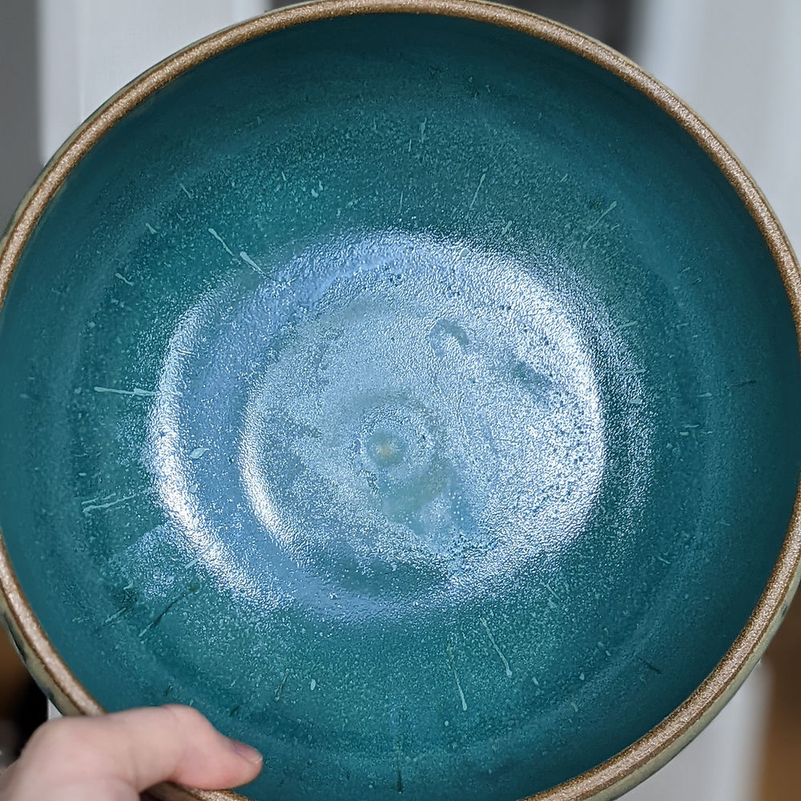
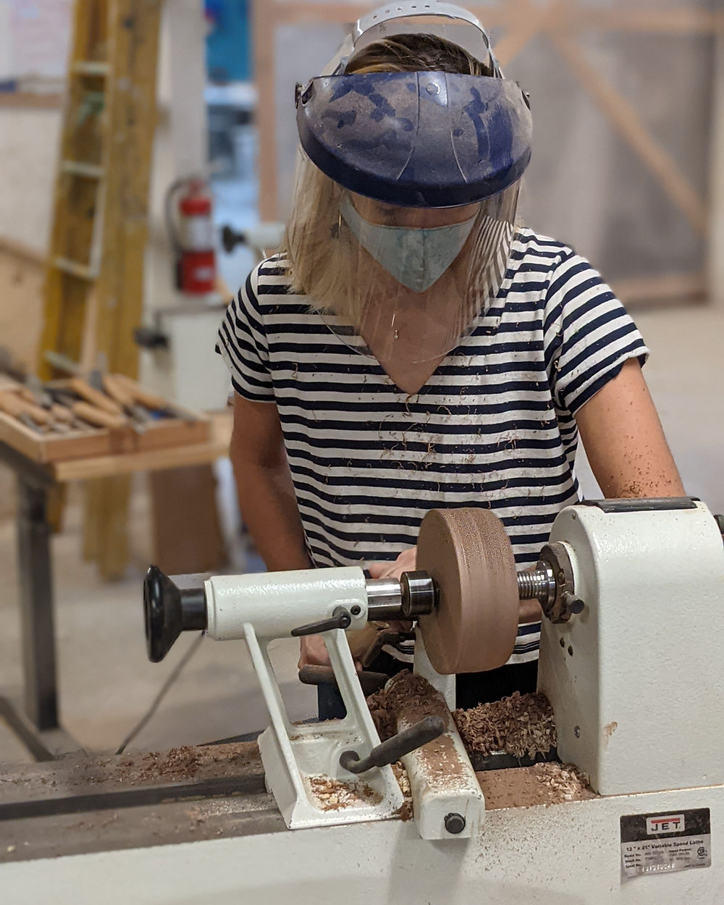
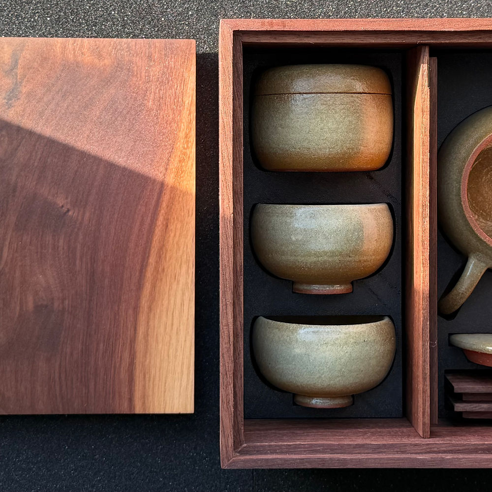

Kids
After-school programs, a new woodturning course, and summer camp, all built around age-appropriate versions of the same skills taught in the adult classes.

Six-week sessions covering hand-building fundamentals, with themes drawn from nature, art therapy, and group collaboration. Two age cohorts.
$300 6 weeks · 3:45–5:45pm

A new six-week woodturning program taught by Miia Lee, introducing the lathe to younger students.

Five-day, immersive sessions covering hand-building, sculpture, and the basics of the wheel. Held at the Potrero Hill studio.
$625 per session · 9am–4pm